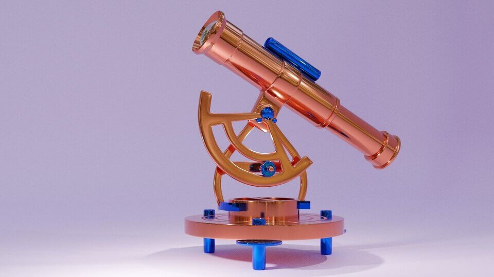

KaraBearArt
My Craft
Digital Art:


I have my own style that I am continuing to develop. I enjoy creating my own characters and doing fan art for my favorite book series and cartoons. Created using Autodesk Sketchbook.
Traditional Art:


Sometimes I will dabble with traditional paper and pencil as well. The majority of drawings here are for my Drawing 1 class where I am learning the principles of drawing.
3D Modeling Projects:




I have started learning how to create 3D models with Blender. I am currently enrolled in a 3D Modeling 1 class where I have created the majority of these.
Animations:
In addition to the Claymation kit where it all began, I have moved into Maya 2019, Blender, DigiCel FlipBook, and FlipaClip.